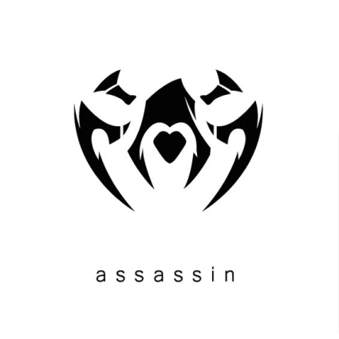
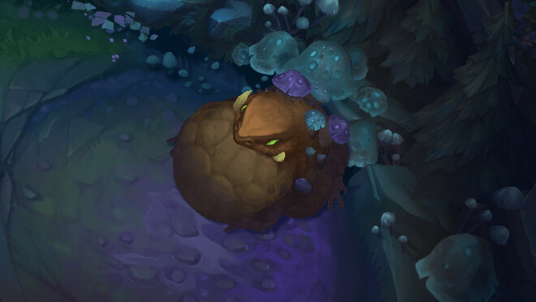
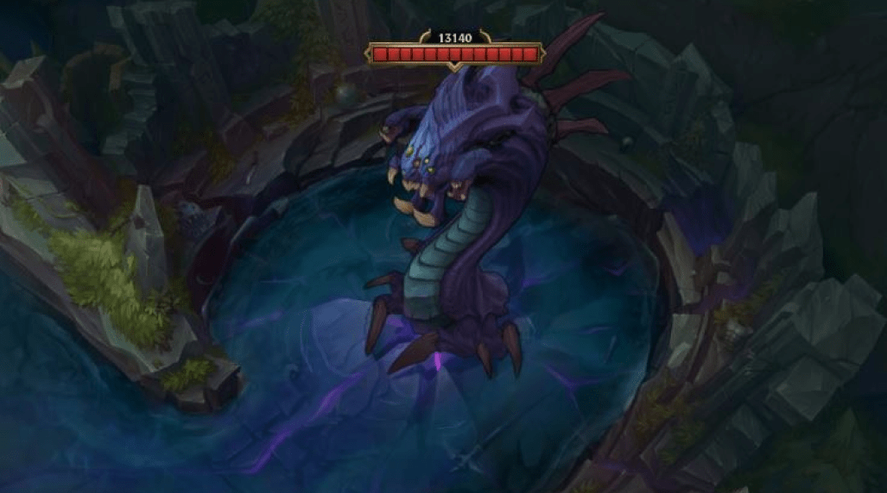

Fundamentos principales
La grieta del invocador
Este videojuego tiene muchas formas de juego, pero la mas jugada y en donde se juega competitivo es "la grieta del invocador". Este mapa tiene dos lados, red side y blue side y tiene 3 lineas : top, que es solo lane, mid, que también es solo lane y bot, que es duo lane; además de la jungla, donde se encuentran los monstruos neutrales.
Roles y carriles
Lo que voy a explicar a continuación es por regla general, es decir, siempre pueden haber excepciones dependiendo de que campeones estén más fuertes cada parche. Además, muchas veces los campeones tienen más de un rol y pueden ser usados en más de un solo carril. Si quieres saber que campeones de cada linea están más fuertes en el parche y/o temporada actual, te recomiendo visitar el siguiente link en el apartado de "Tier list": u.gg
Top lane
La top lane es el carril que se encuentra en la parte superior del mapa, cerca de los heraldos de la grieta y el baron nashor. En la top lane suelen ir tanques y luchadores:
Tanques
Los tanques son campeones que tienen mucha vida y aguantan mucho, pero hacen poco daño por segundo. Por lo general son los que se encargan de iniciar las peleas en equipo y pararse delante de todo, absorbiendo el daño para que sus compañeros puedan pegar sin mucho riesgo.
Luchadores
Los luchadores, tambien conocidos como bruisers, son campeones muy fuertes en combates prolongados cuerpo a cuerpo y son muy buenos para el 1 contra 1. Los luchadores son los que tienen un mayor equilibrio en cuanto a su resistencia y la cantidad de daño que pueden hacer. Tienen mucha vida con respecto a los otros roles, pero no llega a aguantar el daño que aguanta un tank y tiene mucho daño, pero no llega a tener el daño explosivo de un asesino o el dps de un mago o adc.
Mid lane
La mid lane se encuentra a la mitad del mapa, es la línea más corta, y a este carril suelen ir asesinos y magos.
Asesinos
Un Asesino es un campeón especializado en matar a aquellos campeones que tienen poca vida. El Asesino se especializa en el arte de ocultarse y matar. Tiene que entrar al combate sin que lo vea el equipo enemigo y en el momento justo, ni muy tarde ni muy temprano, porque sino puede ser neutralizado muy facilmente.
Magos
Los magos son por lo general campeones a distancia que priorizan habilidades y hechizos por sobre sus ataques básicos. Los magos se caracterizan por tener hechizos de larga distancia o con daño en area. Principalmente en las peleas de equipo son los que más daño hacen, junto al adc. Además suelen tener muchisimo control de masas en sus habilidades (stun, inmovilizaciones, slow, etc.).
Magos de artillería
Los magos de artillería se caracterizan por tener muchísimo rango en sus habilidades, por lo que aprovechan esto para bajarle la vida a los enemigos desde lejos. Además tienen poca movilidad, por lo que si logras acercarte a ellos es muy dificil que no logres matarlo.
Magos de batalla
Los Magos de Batalla no tienen tanto rango como los de artillería pero tienen habilidades con mucho daño en area, lo que se meten en medio de la pelea para bajarle la vida a sus enemigos o meterles control de masas.
Bot lane
La bot lane es el carril inferior del mapa. Este es el único carril del juego donde cada equipo manda dos jugadores:
ADCARRY
Los adc son campeones a distancia cuyo poder gira casi exclusivamente en torno a sus ataques básicos y es probablemente el rol más importante a la hora de hacer daño en las peleas por equipos, es el que se supone que tiene que carrear al team , pero al mismo tiempo son muy frágiles y cualquier descuido puede llegar a hacer que muera, por eso el adc tiene que estar protegido por el tank y el support. En la bot lane es el adc el que tiene que farmear los súbditos y en lo posible llevarse todas las kills a campeones. Hay diferentes tipos de adc, pero es lo voy a explicar de manera más específica en AdcGuide.
SUPPORT
Los soportes son campeones que se centran en ayudar a sus aliados mediente bonificaciones, escudos y/o curas o tambien molestando e inhabilitando a los campeones enemigos mediante el uso de Control de masas (CC). Muchas veces este rol está desprestigiado y se dice que no sirve para nada, pero es una completa mentira. Desde la fase de lineas hasta finales de la partida, los soportes otorgan ventajas y crean oportunidades para sus compañeros de equipo puedan capitalizar. De hechos en las ligas superiores siempre se dice que el que gana la fase de lineas en la bot lane no es el mejor adc, sino que es el support el que tiene que ganarla.
Poke
Los supports de poke se caracterizan por abusar de su rango de habilidades más grande que el de la media para desgastar al enemigo. Algunos son magos reconvertidos a supports, pero también los hay que son puramente personajes de apoyo.
Engage
Los supports de engage son aquellos campeones que su función es iniciar las peleas (por lo general suelen ser tanques o tienen más vida que el promedio). Son campeones que desde bien temprano pueden abalanzarse sobre el rival y noquearlo rápidamente.
Peel
La función de los soportes de peel es intentar protejer al adc, generandole la mayor cantidad de tiempo posible para sobrevivir y que pueda meter el mayor daño posible. En este rol abarcan desde campeones que den escudos o curaciones hasta campeones tanques que tengan mucho disengage (sacar al rival de encima a alguien)
Jungla
La jungla es completamente diferente a los otros carriles. El rol principal del jungla es farmear los monstruos neutrales que se encuentran en ella, rotar por todo el mapa ayudando a tus compañeros e intentar matar a los monstruos epicos (aunque estos se sacan en equipo, no dependen unicamente del jungla). En la jungla suelen ir asesinos, luchadores y algun que otro tank. Para poder farmear los monstruos neutrales es necesario llevar el hechizo de invocador "castigo" o mejor conocido como smite(en ingles). Cuando llevamos el smite el juego nos permite comprar en la tienda el objeto especializado para la jungla, el cual hace que los monstruos den más experiencia. Además cuando le tiras el smite a un monstruo, el hechizo te cura.
Monstruos neutrales:
A diferencia de los Súbditos, los Monstruos neutrales no luchan a favor de ningun equipo y no atacan automáticamente a un campeón a menos que sean atacados. En caso de que sean atacados se moveran y atacaran al campeon más cercano y lo perseguirá hasta cierto punto; una vez pase ese punto volverá a su lugar de origen y se recuperará la vida. Cada vez que matas a uno de estos mounstros va subiendo de nivel y mientras sus niveles suben, también lo hacen sus recompensas de oro y experiencia junto con su daño y sus estadísticas. Los campamentos de la jungla de red side y blue side están invertidos.
BLUE
Al matar al blue recibirás un beneficio de regeneración de mana o energía y además de darte reducción de enfriamiento en tus habilidades.
GROMP
Sus ataques básicos hacen daño mágico y al matarlo te regenerará vida y maná instantaneamente.
LOBOS
El Campamento de Lobos consiste en un gran lobo y dos pequeños lobos. Matar a este campamento solo otorgará oro y experiencia.
RED
Al matar al red recibirás un beneficio de regeneración de vida y potencia tus ataques básicos, haciendo que ralenticen y envenenen al enemigo.
RAPTORS
El campamento de los Raptors es uno de los que más daño infligen. Está conformado por 5 monstruos; 4 pequeños y un Raptor grande. Matar a este campamento solo otorgará oro y experiencia.
ANCIENT KRUGS
Este campamento esta formado de un rocoso grande y uno mediano. Matar al mediano hace que salgan dos rocosos pequeños y matar al rocoso grande hace que salgan dos rocosos medianos, que luego al matarlos aparecen más rocosos pequeños. Matar a este campamento solo otorgará oro y experiencia.
Crab
El crab se encuentra tanto en el río superior del mapa, como el inferior. Este campamento no ataca a quienes lo atacan, solamente corre. Tiene un escudo que puede ser eliminado con cualquier control de masas (menos slows) o usando el smite. Este campamento da muchísima experiencia y otorga visión a la mitad del río, por lo que es vital que los junglas intenten por lo ménos matar a uno de ellos.
Monstruos epicos
Los monstruos epicos son muy importantes y muchas veces la victoria o la derrota de la partida depende de llevarse o no las bonificaciones que dan al matarlos.
Dragones elementales:
Los dragones se encuentran en la parte inferior del mapa, en el río, y respawnean cada 5 minutos luego de ser elminados hasta que uno de los dos equipos logre asesinar a cuatro dragones. Una vez que un equipo consiga eliminar a cuatro, ese equipo obtendrá el alma del dragón, una poderosa bonificación. Los primeros tres elementales aparecen de forma aleatoria y serán de diferente elemento entre sí y luego a partir del cuarto todos copiarán el elemento que tenía el tercero en orden de aparición. Además cuando salga el tercer dragón cambiará el mapa, dependiendo de que elemento sea.
Dragón infernal
Eliminar a este dragón hará que el equipo consiga una bonificación de daño de ataque y poder de habilidad. Si este dragón es el tercero en aparecer se destruyen barreras en la jungla, creando nuevos caminos, y hace la fosa del dragón más abierta al río. El alma de este dragón hace que cada 3s, el siguiente ataque que inflija daño a un enemigo activa una pequeña explosión, que inflige daño al objetivo y a los enemigos cercanos.
Dragón de montaña
Eliminar a este dragón hará que el equipo consiga una bonificación de armadura y resistencia mágica. Si este dragón es el tercero en aparecer se añaden rocas en la jungla y se coloca una roca delante del foso del dragón, dividiendo la entrada en dos. El alma de este Dragón hace que después de no recibir daño durante 5s, obtengas un escudo que absorbe daño.
Dragón de océanos
Eliminar a este dragón hará que el equipo consiga una bonificación de regeneración de vida. Si este dragón es el tercero en aparecer se provoca que haya mucha más maleza y nuevos frutos de miel, sumando también maleza en la zona de la fosa del dragón. El alma de este Dragón hace que cada vez que inflijas daño a un enemigo restaures vida y maná a lo largo de 3s.
Dragón de nubes
Eliminar a este dragón hará que recibas reducción de enfriamiento de la hablidad definitiva. Si este dragón es el tercero en aparecer se crean corrientes de aire que aumentan la velocidad de movimiento. El alma de este Dragón hace que obtengas un aumento de la velocidad de movimiento de forma pasiva y tras lanzar la definitiva, otorga velocidad de movimiento adicional durante 3s
Heraldos de la grieta
El heraldo de la grieta se encuentra en la parte superior del mapa, en el río, y tiene en su espalda un ojo, que si le pegas le infliges mucho daño. Una vez asesinado, el heraldo deja en el suelo su ojo que puede ser recogido por el equipo que lo asesino. Una vez que alguien tiene el ojo del heraldo, puede invocarlo clickeando la tecla para poner los wards. Una vez invocado, el heraldo avanza por un carril hasta llegar a una torre enemiga. cuando llega a la torre da un primer cabezaso, infligiendo muchísimo daño a esta. Pueden haber un total de dos heraldos a la largo de toda la partida. Después de matar el primer heraldo, el segundo aparecerá a los 5 minutos. A partir del minuto 19:45 el heraldo desaparece y aparece en su lugar el Baron Nashor.
Dragón Ancestral
El dragón ancestral aparecerá 5 minutos después de que uno de los dos equipos consiga el alma del dragón. Matar al dragón ancestral hace que todos los jugadores vivos del equipo que lo logró matar obtengan una bonificación en sus ataques y habilidades, quemando al objetivo. Si el enemigo recibe el daño de la quemadura cuando tiene un 20% de su vida o menos, será ejecutado inmediatamente. Este objetivo puede llegar a ser incluso más importante que el Baron Nashor. Si el jugador que tiene esta bonificación muere, la perderá.
Baron Nashor
El Baron es el monstruo mas poderoso de la grieta y matarlo otorgará 300 de oro de manera global a todo el equipo, muchísima experiencia y encima una bonificación a aquellos jugadores del equipo que sigan vivos. Esta bonificación dura 3 minutos y hace que el jugador que la obtuvo tenga daño físico y poder de habilidad aumentados, una vuelta a base mucho más rápida y encima un aura que le aumenta todas las estadísticas a los súbditos cercanos.
oro y experiencia
¿Qué es el oro y para que sirve?
El oro es la moneda que se usa dentro del juego y se utiliza para comprar objetos en la tienda. Estos incrementan las estadísticas bases de los campeones y muchas veces los objetos traen habilidades especiales, tanto pasivas como activas. Además esta es una de las principales formas de aumentar el poder de tu campeon en la partida. Esta moneda se puede obtener matando súbditos, monstruos neutrales, campeones enemigos o incluso con las torretas.
¿Qué son la experiencia y el nivel?
La experiencia es la manera que tienen los campeones para poder subir de nivel. Cada campeon tiene 18 niveles como máximo, empezando la partida en nivel 1. Cada vez que se sube de nivel se suben automaticamente las estadísticas básicas, pero además esto nos permite tanto mejorar una habilidad que teníamos aprendida, como aprender una nueva. El nivel se obtiene de la misma manera que el oro y es tan importante (incluso puede llegar a ser más) como la cantidad de objetos que tengamos.
Súbditos
Los Súbditos son unidades aliadas o enemigas que se generan automáticamente en cada carril. Estos se generan a partir del minuto 1:15. Salen desde la base, y cada oleada de subditos se genera cada 30 segundos. A medida que pase el tiempo en la partida (cada 3 minutos) los subditos se van haciendo más fuertes. Dar el último golpe de muerte a uno de ellos da oro al que lo hizo; a eso se lo llama farmeo.
Melee
Estos son subditos guerreros que pegan cuerpo a cuerpo y son los primeros de la oleada en avanzar. Tienen mucha vida, pero pegan menos; a su vez dan más oro que los magos
Magos
Esta clase de subditos atacan a larga distancia y siempre van atras en la oleada. Si atacan juntos pueden llegar a hacer mucho daño. Además son los subditos que menos oro y experiencia dan.
Cannon
Estos aparecen cada 3 oleadas en cada linea y atacan a media distancia. Además hacen más daño y tienen más vida que los súbditos regulares, pero dan más oro y experiencia.
súper subditos
Es el tipo de súbdito más poderoso que aparece en League of Legends, pero además es el que más oro y experiencia puede llegar a dar. Estos pueden empujar líneas fácilmente y destruir torretas enemigas si se las deja desprotegidas.
Estructuras
Torretas
Las torretas son estructuras que defienden el avance de los enemigos, ya que los atacan cuando entran a su rango de ataque. Estas además otorgan vision y cuando un equipo la destruye otorga oro global a todo el team (la primera torre destruida de la partida otorga más oro que las demás) y oro local a aquellos que destruyan las placas (barras de vida internas de la torre). Hay 3 torretas por linea y 2 que cubren el nexo; es decir, cada equipo tiene 11 torretas por equipo en total. La torre de tier 1 es la más lejana al nexo, la torre de tier 2 es la del medio y la torre de tier 3 es la que cubre al inhibidor.
Inhibidores
Los inhibidores son estructuras que se encuentran atras de la ultima torre de cada carril. Cuando estos son destruidos genera que en el carril en el que fue destruido se genere un súper subdito (del equipo que lo haya destruido) por oleada que da 90 de oro y mucha experiencia de recompensa (a menos que se tiren los 3 inhibidores, en ese caso son dos súper subditos por oleada). Además incrementan la vida y la armadura de los demás subditos del carril. Los inhibidores destruidos se reactivan luego de 5 minutos, haciendo que ya no aparezcan Super Súbditos y que se elimine la vida adicional de los súbditos normales.
Nexo
El Nexo es el objetivo más importante dentro de cada partida. Para que un equipo gane, uno de los dos nexos tiene que ser destruido. Se encuentra dentro de la base y todo aquello que hagamos en la partida está enfocado en destruir al Nexo enemigo lo más rápido posible.
Fuente
La fuente es una estructura que se encuentra en lo mas profundo de la base de cada equipo y esta sirve para que los jugadores recuperen su vida y su mana y es donde aparece cada jugador luego de revivir. Además uno puede aparecer en la fuente apretando la tecla "b" y esperando que se termine el casteo que dura 7 segundos. Solo se pueden comprar objetos en la tienda cuando uno está dentro de la fuente.